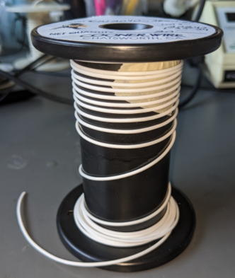

operanthouseのヘッダー
Kitaya lab
Miniscope解析
【概要】
オペラントハウスではヘッドマウント型蛍光顕微鏡であるUCLA大学のMiniscope v4を用いてin vivo calcium imagingを使う事ができます。in vivo imagingではイメージングデータと行動のデータを同期させるため、miniscopeと共にオペラントハウスの制御もPCで行います。動作が確認されているOSはWindows 8.1/10です。確認はしてませんがWindows 11でも動くと思います。
また天井にはケーブルのねじれを取るスリップリングが追加されます。

【必要な物】
紫外線硬化接着剤 or エポキシ系接着剤HDMI(オス) - DisplayPort(オス)ケーブル (もしPCにDisplayPortしかない場合)
【スリップリングの製作】
＜ケーブルの準備＞
まずは上図①のケーブルを作ります。
ケーブルは細くて柔らかいCOONER WIRE社のCW2040-3650 SRを使います。

まず22cmの長さに切ります。

下図はCoaxialケーブルの断面図ですが、陰極が陽極を覆う構造になっています。
Coaxialケーブルはこの構造によりシグナルを電磁波ノイズから守っています。

外側の被膜を剥きます。

先のとがったピンセットなどで繊維をほどきます。

繊維をほどくと細いビニル被膜された線が見えてくると思います。これがプラス極です。
陽極以外の繊維はマイナス極なのでこれらをねじって束ねます。

次は少々難しいですが、プラス極の先端の被膜を剥きます。
ニッパーで被膜の端に少しだけ傷を付けてからニッパーで剥き上げると上手く行きます。
この作業は拡大鏡や実体顕微鏡下で行うと楽です。

次にMiniscopeへ接続するためのHiroseコネクター（雌）をハンダ付けしましょう。
両面テープを机にはり、その上にHiroseコネクターを付けます。
この作業は裸眼でも不可能ではないですが、拡大鏡か実体顕微鏡下で行う事を強くお勧めします。
丸で囲った部分はプラス極でそれ以外の金色の部分は全てマイナス極です。

フレキシブルアームを用いてケーブルを丁度よい位置にセットしてハンダ付けを行います。
ハンダ付け後にショートしてないかテスターで確かめることを忘れないでください。

このままだと強度的に弱いので紫外線硬化接着剤（もしくはエポキシ接着剤）でプラス極の線を中心に補強します。
この時コネクターの接続部を下にすると接着剤が接続部に流れて行き接点不良になる危険があるため、写真のように接続部は上を向けてください。
（紫外線硬化接着剤は固まるまで待たなくて良いのでお勧め）

＜スリップリングの改造と接続＞
次にスリップリングの改造を行います。
スリップリングの原理は以下の通りで、中に回転する伝導体のドラム（青）とそれに接触する電極（赤）があり、ドラムが回転しても電極は接触し続けるため電気的な接続をキープできます。

使用するスリップリング、775 (Adafruit industries)ですが、軸を手で回転させるとそこそこ強い抵抗を感じると思います。
これは775はラインが6つあり、1ラインにつき電極が2本あるため合計12本の電極がドラムをこすっているためです。
しかしながらMiniscopeは2ラインしか使わないため残りの4ラインは不要なのでまずはこれらを除去します。
まず余分な長さの配線を切ります。

次にプラスティックのカバーを除去します。
スリップリングの上部に隙間が見えると思います。この隙間にニッパーを差し込んでカバーを破壊していきます。


取れました。
次にスリップリングを分解します。本体を２つに割りましょう。ドラムは持ち上げれば外れます。
それぞれ3対の電極が立っているのが見えると思います。1対が1ラインに対応しています。
Miniscopeでは2ラインのみ必要なので赤で囲ったラインを除去しましょう。


不要なラインを写真のように外側に曲げてドラムに接触しなくさせます（真ん中のラインは触らないように注意！）。

作業が終わったら組み立て直し、テープで巻いて固定します。
軸回転の抵抗が減っていればスリップリングの改造は完了です。

Coaxialケーブルのスリップリング側を先ほどと同じ作業により被膜を除き、露出させます。
そしてスリップリングにハンダ付けします。そしてショートしてないか確認します。

接着剤で強度的に弱い部分を補強します。

これで①のラインは完成です。次は②のスリップリング-DAQ間の配線作成です。
Coaxialケーブルを20cmの長さに切り、両端を露出させます。

スリップリングにハンダ付けして接着剤で補強します。


この場所にストレスが集中しないように6mm熱収縮チューブも付けます。


次に反対側をSMAコネクターにハンダ付けし、ショートしてないかの確認後、接着剤を付け、熱収縮チューブを付けます。
ハンダ付け後に熱収縮チューブを入れる事はできないので前もって配線に通しておいてください。


Miniscopeに接続したら完成です。

【ホルダーの製作】
次にスリップリングとDAQボード（Data acquisition board）をオペラントハウスに固定するため、左メニューの製作の準備ページ(ﾀﾞｳﾝﾛｰﾄﾞ)からダウンロードできる3DプリンタデータのOption parts/Miniscopeフォルダにある以下のパーツを印刷します。
- Commutator holder.stl
- DAQ holder.stl
左がスリップリング、右がDAQボードを入れるスロットです。

これらスロットをオペラントハウスのフタに固定しましょう。
[カメラ検出の場合]

[IRセンサーバー検出の場合]

ここではIRセンサーバー検出用のフタを用いて解説します。
スリップリングをホルダーに設置します。

2mmのネジでスロットを固定します。

DAQ boardを設置します。

【PCの準備と接続】
性能がそれなりに良いWindows PCを準備します。
PythonパッケージであるANACONDAのサイト(https://www.anaconda.com/download)からDistribution Installerをダウンロードし、インストールします。
オペラントハウスではいくつかのプラグインを導入する必要があるため、元のpythonを汚さないよう、virtual environmentの設定をしましょう。
[Virtual environment]
Anaconda Promptを起動します。
以下の文字をタイプしてOperaEnvという名前の仮想環境を作ります。

次に作成した環境をONにします。

これにより、pythonプログラムを実行する際にはOperaEnvを使うようになります。
ちなみにこの仮想環境はCドライブ > Users > ユーザー名 > .conda > envsに保存されています。
では次にプラグインを入れて行きましょう。
まずはUSBカメラをキャプチャーするためOpenCVを導入します。

次にArduinoとのシリアル接続のためのpyserialを導入します。

さらにwin32apiもインストールします。
これでpython側の設定は完了です。
[オペラントハウス]
次はオペラントハウスのコードをPC用に変えましょう。
メモ帳でオペラントハウスのプログラムを開き、General settingのRaspberryModeの値を0にします。

制御コンピュータをラズパイからPCへ変更するため、ArduinoのUSBケーブルの接続先をラズパイからPCへ変えます。またUSBカメラもPCに接続してください。
赤外線センサーバーを使っている場合はそれもPCに接続してください。
次にPCがどのポートでArduinoを認識したか調べます。
コントロールパネルからデバイスマネージャーを開いてください。

赤で囲った所がポート番号です。この中のUSB serial Device (COM6)がArduinoです。もしどれか分からない場合はArduinoからUSBケーブルを抜いてどの番号が消えるかで確かめてください。
次にオペラントハウスで設定されたポート番号を確認します。

ポート番号がCOM3となっているのでこれをCOM6に変えます。

もしカメラを内蔵したノートPCを使っている場合は、デバイスマネージャーでdeactivateしておいてください。

[Miniscope]
今回の実験ではMiniscope側のソフトで行動カメラをキャプチャーする必要がないため、Miniscope側のソフトのconfig fileを変え、Behavior cameraキャプチャーをオフにする必要があります。
MiniscopeのデフォルトのConfigfileであるUserConfigExample-V4-Miniscope-plus-WebCam.jsonをメモ帳で開き、赤で囲った"cameras"の項目を削除してください。

削除後、このようになっていればOKです。

これで全ての準備ができました。
ソフトの起動もAnacondaから行います。
AnacondaでOperaEnvをactivateし、cdコマンドを使ってカレントディレクトリをオペラントハウスのフォルダに移します(パスは環境毎に異なります)。

次にpythonコマンドを使ってオペラントハウスのコードを実行します（最後のプログラムのファイル名はバージョンアップで変わるので、あなたのフォルダ内にあるファイル名にしてください）。

オペラントハウスが起動したら次にMiniscopeのソフトを起動し、Miniscopeの画像が正常にキャプチャーされるかチェックします。
<もし表示されない場合>
カメラIDの設定が間違っている可能性があるので（現状オペラントハウスのカメラは0, Miniscopeは1のカメラIDが割り振られている前提の設定）、カメラIDを以下の手順で入れ替えてください。
オペラントハウスのソースコードのCameraIDを1に変更

MiniscopeのconfigファイルのdeviceIDを0にする

カメラIDの割り振りは同じ接続パターンであれば基本的に同じですが、変わる可能性もゼロではないので不具合が出たらカメラIDの入れ替えを試してみてください。
オペラントハウスの天井カメラとMiniscopeの両方でキャプチャーでき、オペラントハウスソフトは30fpsで動き、Miniscopeはframe dropが立ち上げ後に増加していなければ成功です（オペラントハウスの保存パスを忘れず設定してください）。
【赤外線センサーバーのリファレンス（赤外線センサーバーを使用している場合のみ）】
カメラでパネルタッチを検出している場合はここをスキップしてください。またここではラズパイですでに赤外線センサーバーを使用した経験がある前提で解説を行います。もし未経験の場合は左メニューのオプションパーツについて＞赤外線センサーバー検出を前もって読んでおいてください。
タッチモニター、Arduino、天井カメラ、赤外線センサーバーをPCに接続してください。
デスクトップを右クリックして画面設定を開き、タッチモニターをメインモニタの右側に拡張画面として置いてください。

PCで赤外線センサーバーを使う場合も基本的にはラズパイでのやり方と変わりません。しかしながらWindows11で赤外線センサーバーを使うとなぜかメイン画面（オペレーション画面）の右側のエリアでマウスポインタが動いてしまいます。このエリアを今後センサーバーエリアと呼びます。

このままだとマウスがパネルをタッチすることでWindowsのタスクバーを操作してしまう危険性があるため、まずタスクバーを左に動かします。
Windows11はデフォルトではタスクバーを動かせないのでStartAllBackというソフトでインターフェイスをWindows10風に戻します。
このソフトはMicrosoft Storeに置いてあります。

インストールすると直ぐにデスクトップがWindows10風になると思います。

（スタートボタンが左に来る）
タスクバーを右クリックしてPropertiesを選びます。

Taskbar location on screenを左にします。

これでタスクバーが左に移動しました。なおこのStartAlllBackは最初の100日は無料で使えますが、その後有料になります・・・。（7ドル程度の買い切りですが）

またタスクバーがタッチモニターに表示されている場合はタスクバーを右クリックして設定を出し、タスクバー項目のタスクバーを全てのディスプレイに表示するをオフにしてください。
赤外線センサーバーはWindowsではペン/タッチデバイスとして認識されています。ペン/タッチデバイスでは長押しするとマウスの右クリックと見なされるためこの機能をオフにします。
コントロールパネル→Pen and Touch→Press and holdを選び、設定ボタンを押し、Enable press and hold for right-clickingのチェックを外してください。
(Pen and Touchは赤外線センサーバーを接続しないと現れません)


次に赤外線センサーバーでマウスカーソルを動く範囲をタッチウィンドウでカバーします。こうしないとマウスがタッチウィンドウ以外の場所をクリックして、タッチウィンドウが非アクティブになってしまい、オペラントハウスがマウスカーソルの位置のトラッキングを中断してしまうためです。
オペラントハウスのコードのGeneral settingを見てください。

PCのモニターよりOperationMonitorWidthの値を小さくするとタッチウィンドウが操作画面にはみ出してきます。またその下のOperationMonitorHeightの数値を増やすことでタッチウィンドウが下に伸びます。これらの数値をいじり、タッチウィンドウがセンサーバーエリアをカバーするようにしてください。

そうするとタッチウィンドウが左に動いて今度はタッチモニターの右側が空いてしまうと思います。そこを空かないようにTouchMonitorWidthの値を大きくします。

この作業が終わったら下のようになっているはずです。

次にタッチポイントのリファレンスを行います。現状だとタッチパネルをタッチしても指の下にオレンジのドットが現れないと思います。
これはラズパイとWindowsでは赤外線センサーバーの座標が異なるからです。
オペラントハウスを起動してSettingボタンを押してください。四角で示したパラメータを調整します。
調整の仕方はラズパイ使用時に行った左メニューの「オプションパーツ→赤外線センサーバー検出」のやり方と同じです。
まずはTouchOffsetでオレンジドットの位置をシフトさせます。Xは数値を大きくすると右へ、Yは数値を小さくすると下へシフトします。
ドットがタッチウィンドウの中に現れるようになったら次にTouchRatioを調整します。タッチした指の動きよりドットの動きが速い場合はTouchRatioの値を下げてください。

指を動かしてもドットがピタリと指の下を追従するようになれば調整完了です。
最後に使う課題のパネルの位置を調整します。これはラズパイでのやり方と同一なのでここでは解説を省きます。
パネルの位置合わせが終わったら赤外線センサーバーのリファレンスは完了です。
【テスト】
Miniscopeでキャプチャーを開始し、オペラントハウスの課題を「スタート」ボタンで手動スタートしてください。両ソフト共にタイムスタンプはWindowsの時計を使っているのでTTL信号などで同期させる必要はありません。